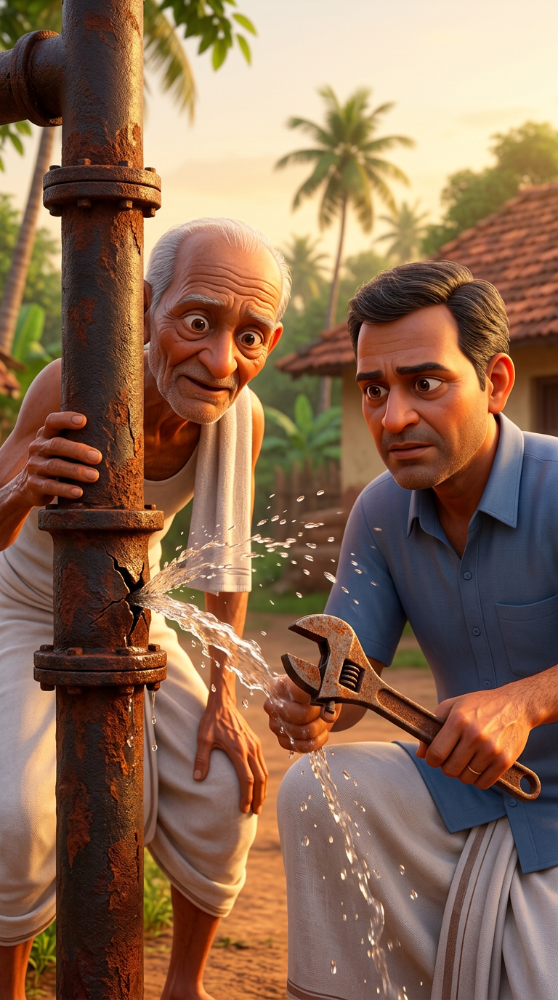
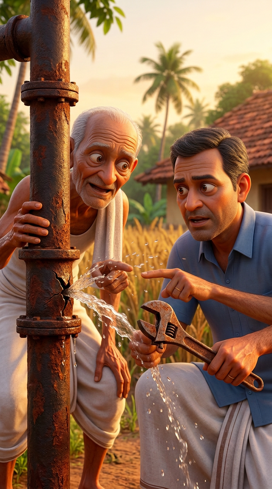
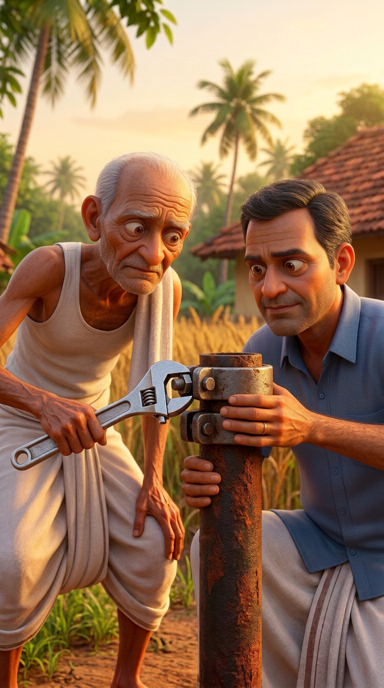
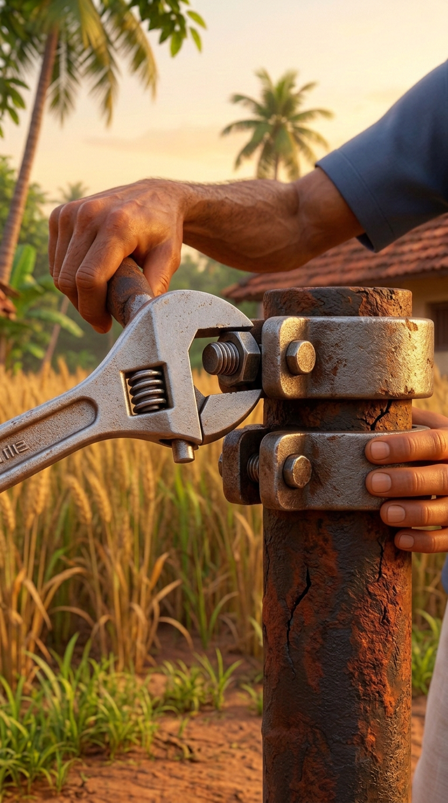
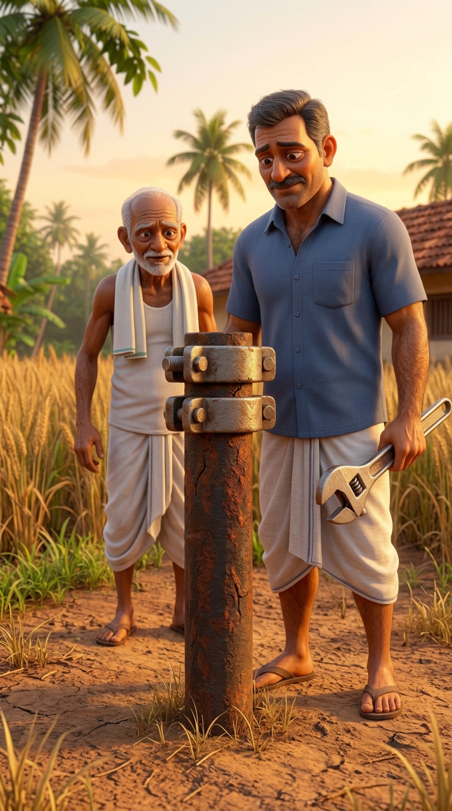

VidBharat image quality retest
Diagnostic preview only. Not approved for publishing.
23.09 seconds against a 30-second target. The same rusty pipe is clearer across shots and captions sit below the repair. The opening shows a wrench too soon, and the younger character gains a moustache in the ending.




